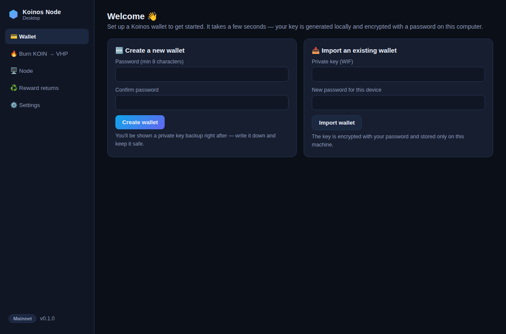
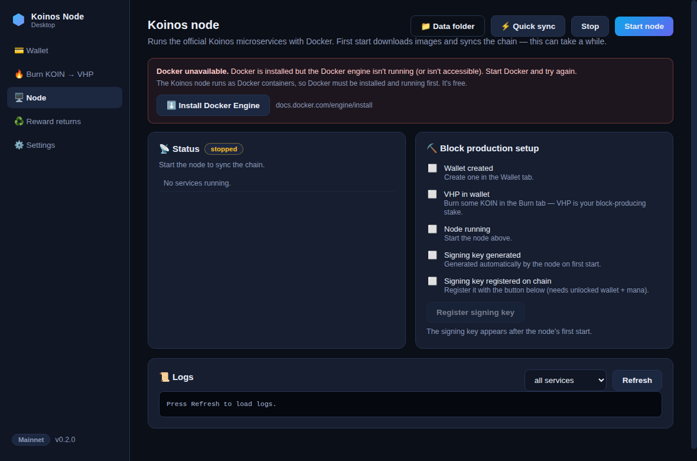
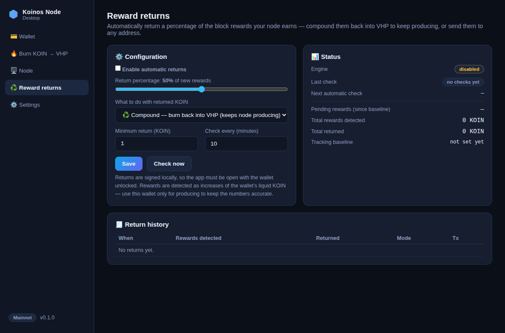

Everything a solo block producer needs
Wallet in seconds
Generate a Koinos wallet locally — encrypted with your password, keys never leave your computer. Import an existing key any time, back up with one click.
Burn KOIN → VHP
Virtual Hash Power is your stake for producing blocks. Burn safely with a built-in liquid-KOIN buffer so you always keep mana to transact.
One-click node
Runs the official Koinos microservices via Docker. Guided checklist covers everything — including registering your block-signing key on chain.
Auto reward returns
Pick a percentage of block rewards to return automatically: compound into VHP to keep producing, or send to any address. Full history included.



Get started in 7 steps
- Install Docker. The node runs as Docker containers.
Docker Desktop for Windows/macOS,
Docker Engine for Linux.
Windows: Docker needs WSL 2 — if it complains, run
wsl --install --no-distributionin an admin PowerShell and reboot. - Install KoinosKit. Download above and run the installer. Windows SmartScreen shows an "unknown publisher" warning because the free build is unsigned — click More info → Run anyway. On macOS, right-click the app → Open the first time.
- Create your wallet and write down the private-key backup it shows you. Store it offline — it's the only way to recover your funds.
- Fund it with KOIN from an exchange, then burn most of it to VHP in the Burn tab. Keep ~10 KOIN liquid for mana (the Max button does this for you).
- Start the node (Node tab) with block production enabled, and use ⚡ Quick sync to restore the official snapshot instead of syncing from scratch. Budget ~160 GB free disk.
- Register your signing key. One click in the node checklist once the node has started.
- Set your return percentage in the Reward returns tab — e.g. compound 50% of rewards back into VHP. Done: your node earns while you sleep.
FAQ
Is it safe? Where are my keys?
Your private key is generated on your machine, encrypted with your password (scrypt + AES-256-GCM), and never leaves it. There's no server, no telemetry — the app talks only to the Koinos RPC you configure. The code is open source on GitHub, so anyone can audit it.
Why does Windows warn about an unknown publisher?
The installers aren't code-signed (certificates cost hundreds of dollars a year). The warning is expected for unsigned open-source apps: click More info → Run anyway. You can also verify what you're running by building from source.
How much KOIN do I need to produce blocks?
Any amount of VHP participates, but more VHP means more frequent blocks. Whatever you burn, keep some KOIN liquid (~10 is comfortable) — mana from liquid KOIN pays for your transactions, and it recharges over time.
How much disk space and bandwidth?
The chain is tens of GB and grows. Quick sync downloads a ~60 GB snapshot and needs roughly 160 GB free during the restore (you can delete the rollback copy afterwards). A regular home connection is fine.
Does the node keep running if I close the app?
Yes — the node lives in Docker and keeps producing with the app closed. Automatic reward returns, however, are signed locally, so they only execute while the app is open with the wallet unlocked; pending rewards simply accumulate until then.
What rewards can I expect?
Koinos targets roughly 2% annual inflation paid to producers, with a bonus for burners relative to non-participants — your share depends on your VHP versus the network total. Producing also consumes VHP over time; the compounding return mode exists exactly to keep topping it up.
Is there a testnet mode?
Yes — switch to Harbinger in Settings and grab free tKOIN from the faucet in the Koinos Discord to try everything risk-free.